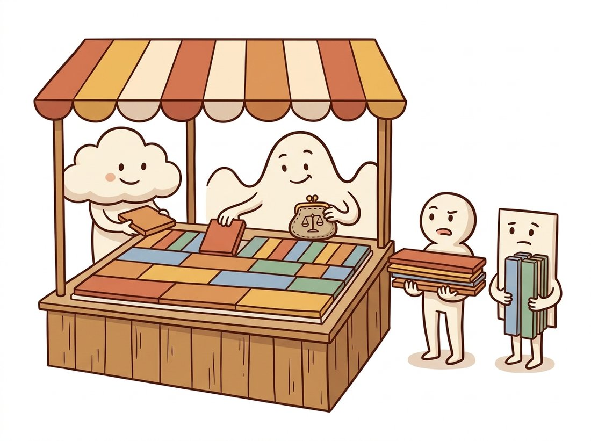

"The Fourier transform knows every note in the symphony but refuses to say when any of them was played. I know the what and the where, within limits my lawyer describes as 'Heisenberg-compliant'."
A Well-Localized Wavelet
Fourier analysis buys perfect frequency knowledge at the price of total positional amnesia; wavelets renegotiate the deal, describing an image by what frequencies occur where, and an uncertainty principle sets the exact limit of how good that deal can get. The result is the representation behind JPEG 2000, the cleanest classical denoising algorithms, and the FBI's fingerprint archive: a multi-scale transform like the pyramids of Section 4.5, but with zero redundancy and an orthogonal basis. This section builds it from the simplest possible wavelet, two pixels at a time.
The pyramids of the previous section decomposed images by scale, but they are slightly wasteful (a Laplacian pyramid carries about a third more numbers than the image it encodes) and their levels are not independent. Wavelets fix both at once, and they answer a complaint you may have been nursing since Section 4.1: a spectrum tells you a strong diagonal texture exists somewhere in the image, but not where. For inspection, compression, and denoising, where matters. This section explains why no transform can answer both questions perfectly, then builds the family that comes closest.
1. What Fourier Forgets, and the Price of Remembering Intermediate
Each Fourier basis wave spans the entire image: a single coefficient $F(u,v)$ mixes contributions from every pixel. That is why one bright dead pixel perturbs the whole spectrum, and why the spectrum of "stripes on the left half" and "stripes on the right half" can look nearly identical. The pixel basis sits at the opposite extreme: perfect location, zero frequency knowledge. The obvious compromise is to window the analysis: chop the image into patches and transform each one. This is the short-time Fourier transform (STFT). Its 2D form with Gaussian windows gives the Gabor filters that reappear as texture features in the classical segmentation of Chapter 11 and, remarkably, as good models of the receptive fields in your own primary visual cortex.
But windowing has a built-in flaw: one window size must serve all frequencies. A window wide enough to estimate low frequencies precisely smears the location of fine details; a window narrow enough to localize an edge cannot tell a 30-cycle wave from a 32-cycle one. The constraint is fundamental, not an engineering failure. For any analysis function with spatial spread $\sigma_x$ and frequency spread $\sigma_u$,
$$\sigma_x \, \sigma_u \;\ge\; \frac{1}{4\pi}$$
the Gabor uncertainty principle, mathematically the same inequality as Heisenberg's. You cannot know both precisely; you can only choose how to spend your uncertainty budget. The wavelet insight is that the right spending plan is frequency-dependent: analyze low frequencies with wide windows (good frequency resolution, who cares exactly where the sky gradient sits) and high frequencies with narrow windows (good localization, which is the whole point of an edge). Figure 4.6.1 compares the four budgets. The illustration below dramatizes the same trade-off as a shopper spending a fixed-size budget on tiles of equal area but different shape.

The inequality $\sigma_x \sigma_u \ge 1/4\pi$ is not a soft guideline; it is a wall, and the four panels of Figure 4.6.1 all have cells of the same area to prove it. Watch what happens when you try to win on both fronts. To pin an edge to within one pixel ($\sigma_x \approx 1$) the analysis function must spread across roughly $1/(4\pi) \approx 0.08$ cycles per pixel in frequency, which over a 512-pixel row is about 40 indistinct frequency bins: you have located the edge precisely and learned almost nothing about its frequency content. Shrink the frequency spread to a single bin instead and the same arithmetic forces the spatial spread out to tens of pixels, so the feature could be anywhere in a fat band. Every panel spends the identical budget; only the shape of the cell differs, and the wavelet's genius is spending it shape by shape, wide-and-flat for the sky gradient, tall-and-thin for the edge.
2. The Haar Wavelet From Scratch Intermediate
The simplest wavelet transform, due to Alfréd Haar in 1910, predates the word "wavelet" by seven decades and needs only addition and subtraction. Take a row of pixels two at a time and record, for each pair, its scaled average $a = (p_1 + p_2)/\sqrt{2}$ and its scaled difference $d = (p_1 - p_2)/\sqrt{2}$. Averages summarize; differences remember what summarizing lost. The pair loses nothing: given $a$ and $d$ you can recover both original pixels exactly ($p_1 = (a+d)/\sqrt{2}$, $p_2 = (a-d)/\sqrt{2}$), so this is a change of description, not a discarding of data, in the same nothing-lost spirit as the Fourier transform. (The $\sqrt{2}$ keeps total energy unchanged, making the transform orthogonal.) In 2D, apply the pairing first along rows, then along columns of both results, yielding four quarter-size subbands:
# One level of the 2D Haar wavelet transform from scratch, using only scaled
# pair sums and differences. It splits the image into four quarter-size
# subbands (LL approximation plus LH, HL, HH detail) with zero redundancy.
import numpy as np
from skimage import data
img = data.camera().astype(np.float64) # 512 x 512
def haar2d_level(a):
"""One level of the 2D Haar transform: returns LL, (LH, HL, HH)."""
lo = (a[:, 0::2] + a[:, 1::2]) / np.sqrt(2) # pair averages along x
hi = (a[:, 0::2] - a[:, 1::2]) / np.sqrt(2) # pair differences along x
LL = (lo[0::2, :] + lo[1::2, :]) / np.sqrt(2) # then the same along y
LH = (lo[0::2, :] - lo[1::2, :]) / np.sqrt(2)
HL = (hi[0::2, :] + hi[1::2, :]) / np.sqrt(2)
HH = (hi[0::2, :] - hi[1::2, :]) / np.sqrt(2)
return LL, (LH, HL, HH)
LL, (LH, HL, HH) = haar2d_level(img)
print(LL.shape) # (256, 256): four quarter-size bands, zero redundancy
# LL is a clean half-resolution image; LH lights up on horizontal edges,
# HL on vertical edges, HH on diagonals and fine texture.Display the four bands and you will recognize old friends: LL is a properly anti-aliased half-size image (it is a Gaussian-pyramid level, by humbler means), while LH, HL, and HH split the lost detail by orientation, the same band that a Laplacian level stores all mixed together. The multi-level transform now writes itself: the LL band is just a smaller image, so transform it again, and again, until the approximation is a handful of pixels. The result, the discrete wavelet transform (DWT), is the critically sampled cousin of Section 4.5's pyramid, with the nested layout shown in Figure 4.6.2.
3. Multi-Level DWT with PyWavelets Beginner
Haar is the clearest wavelet but not the best for photographs: its blocky basis leaves staircase artifacts under heavy compression. Practical systems use smoother families, Daubechies (db2, db4), symlets, biorthogonal pairs (JPEG 2000 uses the bior-family CDF 9/7 and 5/3 wavelets), all available through PyWavelets:
# Run a three-level db2 wavelet decomposition with PyWavelets and measure
# energy compaction: the fraction of total energy held by the largest 1% of
# coefficients, which is why wavelets compress natural photographs so well.
import pywt
coeffs = pywt.wavedec2(img, wavelet="db2", level=3)
print(coeffs[0].shape) # (66, 66) coarse approximation
print([lvl[0].shape for lvl in coeffs[1:]]) # [(66, 66), (130, 130), (257, 257)]
arr, slices = pywt.coeffs_to_array(coeffs) # pack into one Figure-4.6.2 mosaic
# Energy compaction: what fraction of total energy do the largest 1% hold?
flat = np.sort(np.abs(arr).ravel())[::-1]
k = int(0.01 * flat.size)
print((flat[:k] ** 2).sum() / (flat ** 2).sum())
# Prints a number close to 1.0 (typically 0.95 to 0.99 for natural photos):
# a few coefficients carry almost everything.That last printed number is the economic engine of everything wavelets are used for. An orthogonal transform cannot create or destroy energy, only reorganize it, and the DWT reorganizes a photograph's energy into very few large coefficients (edges, structures) and a vast desert of near-zeros (smooth regions, at every scale). Compression keeps the few and cheaply encodes the desert; denoising exploits the same sparsity from the opposite direction.
4. Wavelet Shrinkage: Denoising by Thresholding Intermediate
White noise is the one signal that refuses to compact: orthogonal transforms spread it evenly, so every wavelet coefficient receives the same small noise contribution. Real image content, by contrast, concentrates into few large coefficients. The two populations barely overlap, and that gap is an algorithm: transform, shrink every coefficient toward zero by a threshold calibrated to the noise level, reconstruct. Donoho and Johnstone's classic recipe estimates the noise from the finest diagonal band (which is almost pure noise in most photos) and applies the "universal" threshold:
# Denoise by wavelet shrinkage: estimate the noise level from the finest
# diagonal subband, soft-threshold every detail coefficient at the universal
# threshold, and reconstruct. Edges survive because their coefficients tower.
rng = np.random.default_rng(0)
noisy = img + 20 * rng.standard_normal(img.shape) # sigma = 20 noise
c = pywt.wavedec2(noisy, "db2", level=4)
sigma = np.median(np.abs(c[-1][-1])) / 0.6745 # noise std from finest HH
# 0.6745 = MAD-to-sigma factor for Gaussian noise
thresh = sigma * np.sqrt(2 * np.log(noisy.size)) # universal threshold
c_den = [c[0]] + [
tuple(pywt.threshold(band, thresh, mode="soft") for band in level)
for level in c[1:]
]
restored = pywt.waverec2(c_den, "db2")[: img.shape[0], : img.shape[1]]
print(round(sigma, 1)) # close to 20.0: the estimate found the noiseCompare this with the Gaussian smoothing of Chapter 3: blurring suppresses noise and edges alike, because in pixel space they occupy the same neighborhoods. In wavelet space they occupy different amplitudes, so the threshold can kill one and spare the other. This idea, denoise where the signal is sparse, is the seed of the entire restoration toolbox of Chapter 7, and its philosophical descendants reach all the way to the learned denoisers at the heart of modern generative models.
Every wavelet application in this section is one trick wearing three costumes. The DWT makes natural images sparse: few large coefficients, many near-zeros. Compression spends bits only on the few (JPEG 2000). Denoising deletes everything small, which is mostly noise (shrinkage). Analysis reads structure off the few large coefficients' positions and scales. When you meet a new representation anywhere in vision, your first question should be the one wavelets teach: what does it make sparse?
Coming last in the chapter, the DWT looks like the upgrade that makes the Fourier transform obsolete. It is not a replacement but a different bargain on the same uncertainty budget. For a globally periodic disturbance, scanner hum, mains banding, halftone screens, the Fourier domain still wins decisively: that interference is a single conjugate pair of spikes there (the notch filter of Section 4.3), but it smears across many wavelet coefficients at several scales, since a wavelet is local and the interference is not. Reach for wavelets when you care where structure sits, for Fourier when you care only what frequencies are present. The second trap is the energy-compaction number from Code 4.6.2: it does not say wavelets can compress noise. An orthogonal transform conserves total energy, so white noise, which has no large coefficients to gather, stays spread evenly across all subbands. Compaction is a property of natural image content, not of the transform acting on arbitrary input, which is precisely why thresholding (delete the small coefficients) separates signal from noise instead of shrinking the noise away.
Our ten-line VisuShrink is instructive but conservative (the universal threshold over-smooths). scikit-image ships the refined version as one line:
from skimage.restoration import denoise_wavelet
clean = denoise_wavelet(noisy / 255.0, method="BayesShrink",
mode="soft", wavelet="db2", rescale_sigma=True)A 10-to-1 line reduction, and the library adds what production needs: BayesShrink's per-subband adaptive thresholds (markedly better detail preservation than one global threshold), automatic noise estimation, color handling in a decorrelated luminance-chrominance space, and correct intensity rescaling. The from-scratch version's value is that you now know exactly which dials these arguments turn.
5. Wavelets at Work: JPEG 2000 and the Compression Lineage Intermediate
The JPEG format you met in Chapter 1 transforms fixed 8x8 blocks with the discrete cosine transform, a Fourier relative, and at strong compression its block boundaries surface as the familiar mosaic of artifacts. JPEG 2000 replaced the blocks with a whole-image DWT in exactly Figure 4.6.2's layout, and the change buys three structural advantages: no block boundaries (artifacts degrade into soft blur instead of mosaics), an embedded progressive bitstream (truncate the file anywhere and you still have the best possible image at that byte budget), and free multi-resolution access (the LL bands are ready-made zoom levels, so a viewer can fetch a thumbnail or a region at reduced scale without decoding the full image). Those properties made it the standard in digital cinema distribution, medical imaging archives, and map servers, even though baseline JPEG kept the consumer web on simplicity and decoder ubiquity.
One of the first large-scale wavelet deployments was the FBI's fingerprint archive in the 1990s. Digitizing tens of millions of ink-on-card prints at 500 dpi was hopeless uncompressed, and JPEG's 8x8 blocking artifacts corrupted exactly the ridge bifurcations that examiners testify about in court. The bureau commissioned a wavelet-based standard, WSQ (Wavelet Scalar Quantization), achieving roughly 15-to-1 compression that preserved ridge detail. Your fingertips may well be wavelet coefficients in a federal database right now.
Who: The infrastructure lead at a digital-pathology company scanning biopsy slides for remote diagnosis.
Situation: A whole-slide scan is enormous (commonly on the order of 100,000 pixels per side, tens of gigabytes uncompressed), and pathologists navigate it like a map: mostly low zoom, with sudden deep zooms into suspicious regions, often over hospital networks of modest bandwidth.
Problem: The original pipeline stored JPEG tile pyramids. At the compression needed for affordable storage, pathologists reported blocky shimmer over chromatin texture, precisely the fine structure used to grade nuclei, and the company faced both clinical pushback and a doubled storage bill from backing off the quality setting.
Decision: They migrated the archive to JPEG 2000 (a DICOM-supported encoding for whole-slide images), serving each viewer request directly from the wavelet bitstream: resolution levels from the nested LL bands, regions from the spatially localized coefficients, and extra quality layers streamed only on deep zoom.
Result: At equal storage cost the blocking artifacts vanished (wavelet degradation reads as gentle softening, which pathologists tolerated far better), and initial slide-open latency dropped because thumbnails decoded from the coarse bands alone, no separate pyramid files needed.
Lesson: When users consume one image at many scales and regions, a multi-resolution transform is not just a codec, it is the serving architecture. The DWT's nested structure did the systems engineering for free.
Wavelets are enjoying a vigorous second act. Wavelet Diffusion Models (CVPR 2023) run the diffusion process of Chapter 33 on DWT subbands instead of pixels, cutting sampling cost several-fold since most bands are sparse and easy. WaLa (2024) scaled the idea to 3D, training billion-parameter generators on wavelet-tree representations of shapes, where the compaction you measured in Code 4.6.2 is what makes billion-scale training tractable. And the compression lineage has gone neural: the JPEG AI standard, finalized in the mid-2020s, replaces hand-designed transforms with a learned analysis-synthesis pair, while research codecs learn lifting steps (the building blocks of fast wavelet implementations) end to end. The design question this section taught, what basis makes images sparse, is now answered with gradient descent, but it is still the same question.
For each task, say whether you would reach for the Fourier transform, the STFT/Gabor bank, or the DWT, and justify in one sentence each: (a) removing a uniform 50 Hz electrical interference pattern from a scanned document; (b) locating every position in a fabric image where the weave pattern breaks; (c) compressing a satellite image so that coastlines stay sharp at 40-to-1; (d) measuring the dominant orientation of brush strokes across a painting.
Using Code 4.6.2's machinery, implement keep-top-k compression: zero all but the largest k percent of DWT coefficients (try k = 0.5, 1, 2, 5, 10), reconstruct with waverec2, and plot PSNR (peak signal-to-noise ratio, defined in Section 1.5) against k for the camera image and for a pure-noise image of the same size. Explain the dramatic difference between the two curves using the sparsity argument, and find the k where the photo's quality curve has its knee.
Benchmark four denoisers on the same noisy image (Gaussian noise, sigma = 15, 25, 40): Gaussian blur tuned by grid search, median filtering, your Code 4.6.3 VisuShrink, and skimage's BayesShrink. Report PSNR and, more importantly, crop and compare an edge region and a flat region for each method. Which method wins where, and at which noise level does the ranking change? Connect each behavior to the spectral story this chapter told about the method.
With wavelets, the chapter closes the loop it opened: an image is the same information in many bases, and the whole skill is choosing the basis where your question becomes easy. Fourier answered "what frequencies", the sampling theorem answered "how densely may I sample", and pyramids and wavelets answered "what lives, and occurs, at which scale". The next chapter keeps the pixels but moves them: Chapter 5: Geometric Transformations & Image Warping covers rotation, scaling, and affine and projective warps, and the interpolation that makes them look clean. Every warp resamples the image, so Section 4.4's sampling theorem is exactly the law that decides whether a rotated or rescaled result shimmers with aliasing or comes out crisp; the prefilter-before-you-sample habit you built here travels straight into it.